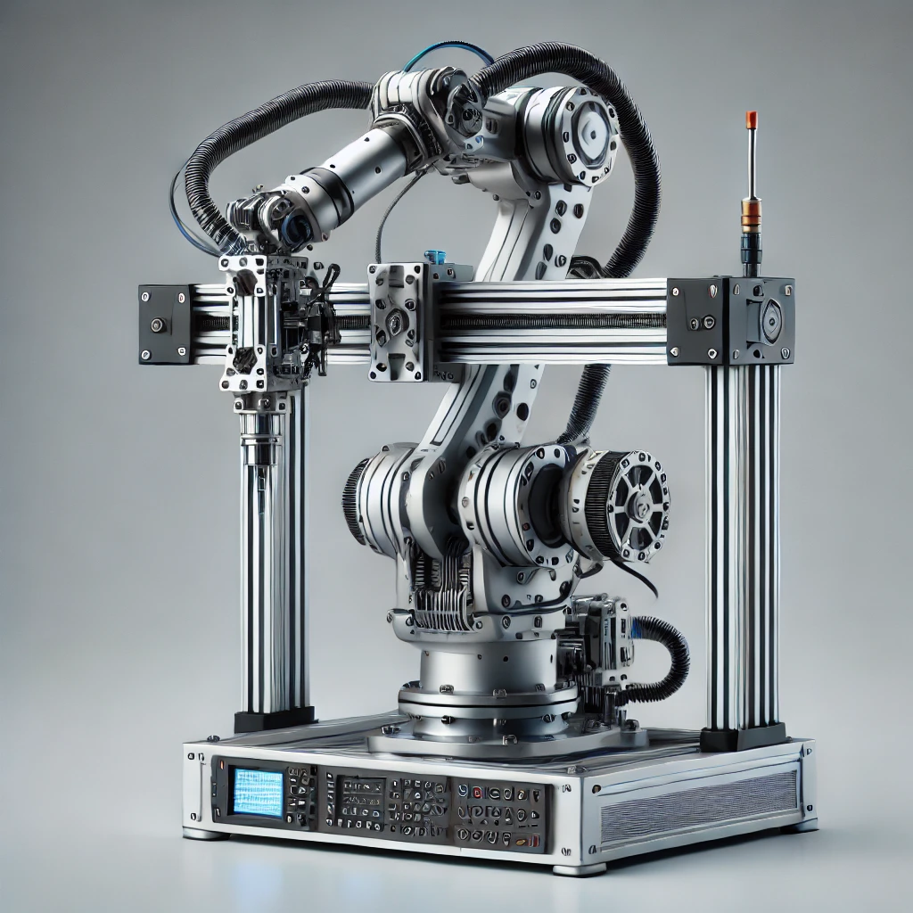

Conceito
O robô cartesiano, também chamado de robô de pórtico (gantry), é um manipulador que se move ao longo de três eixos lineares perpendiculares entre si, formando o sistema de coordenadas cartesianas. É uma das configurações mais simples e precisas de robôs industriais.

Princípio de funcionamento
O funcionamento se baseia em guias lineares (trilhos) e fusos ou correias acionados por motores elétricos, que deslocam o efetuador final nos eixos X, Y e Z de forma independente. Como o movimento é puramente linear, o controle de posição é simples e extremamente preciso, sem a necessidade de cálculos cinemáticos complexos.
Principais características técnicas
| Graus de liberdade | 3 (translação em X, Y e Z) |
|---|---|
| Tipo de movimento | Linear em todos os eixos |
| Precisão | Muito alta (décimos de milímetro) |
| Velocidade | Moderada |
| Capacidade de carga | Baixa a alta, dependendo do porte da estrutura |
| Área de trabalho | Formato retangular (cúbico) |
Aplicações industriais
- Pick and place (pegar e colocar peças);
- Usinagem CNC e corte de materiais;
- Montagem de componentes eletrônicos;
- Paletização de caixas e embalagens;
- Dispensação de adesivos e solda de precisão.
Integração com automação e IoT
Robôs cartesianos podem ser equipados com sensores de posição e encoders conectados a controladores industriais (CLPs) que enviam dados de produção para sistemas MES/SCADA. Isso permite monitorar o número de ciclos executados, detectar desgastes nos trilhos e realizar manutenção preditiva de forma remota.